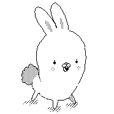

Plan 9 is a fully-featured, clean, compact and uniform operating system built as a successor to Unix.
Plan 9 is not a product, it is an experimental investigation into a different way of computing. The developers started from several basic assumptions: that CPUs are very cheap but that we don't really know how to combine them effectively; that *good* networking is very important; that an intelligent user interface is a Right Decision; that existing systems are not the correct way to do things, and in particular that today's workstations are not the way to go.
This portal serves to introduce to Plan 9's ecosystem and application development. I currently use Plan 9 as my daily driver, installed on a Raspberry Pi 3B, the flavor of the operating system that I presently run is Richard Miller's image. I don't know anything about the issues involved in emulation, and I am not interested in plan9port.
I've divided my notes into Rio(windows manager), Acme(text editor) and misc Plan9 C tutorials.
An argument for simplicity and clarity.Rob Pike
More broadly, in the Plan 9 software, for instance when you cat a file, all characters missing from the font (as well as NUL and U+FFFD characters) render as tiny pjw faces.

incoming moogle snarf catclock forth ansi c rio acme plan9 c raspberry usagi